匿名处理
只保留行业、场景和工艺层面的信息，不公开客户名、工厂名和订单细节。
实拍素材的作用不是证明供应商可靠，而是说明格物集如何观察、筛选和解释真实工厂现场，让对外资料更有判断依据。
只保留行业、场景和工艺层面的信息，不公开客户名、工厂名和订单细节。
车间、设备、包装、材料、仓储和厂区细节作为现场语境被展示。
素材会被筛选和排序，用来解释具体的产品、工艺、现场条件或沟通重点。
这些素材不是审厂报告、验货证明、供应商保证或法律尽调证据。
每组素材都做匿名处理。不公开客户名、工厂名、Logo、图纸、订单细节、人员正脸和敏感信息。
用于说明零件状态、半成品材料和仓储语境，不暴露具体工厂名称。

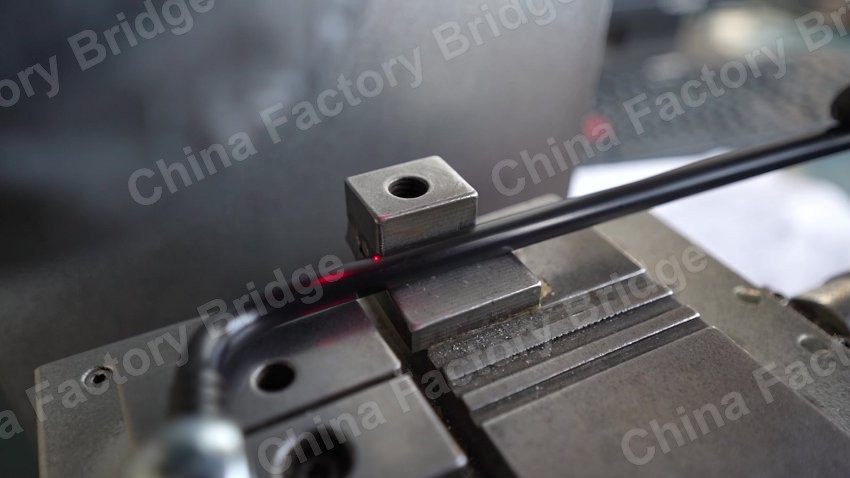
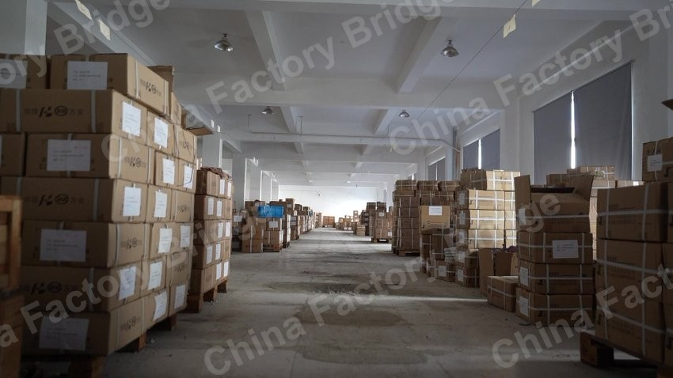
用紧凑视角展示设备密度、机器运行和生产通道周边的工作流。

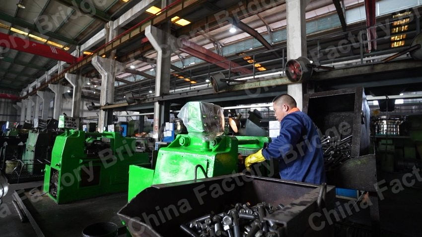
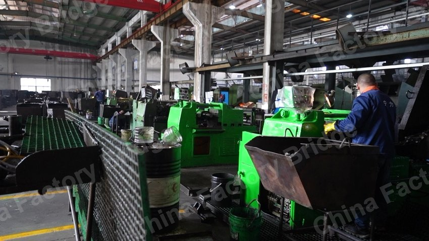
厂区层面的素材可以说明生产环境，而不只依赖宣传册里的修饰性语言。


公开素材只呈现设备和空间语境，不暴露文件、配方或客户细节。

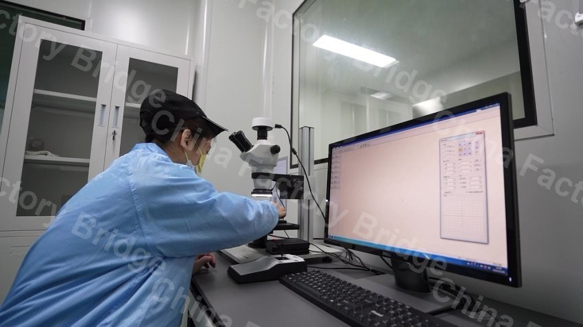

中性视角可以说明生产类型、设备排列和现场条件，不把素材写成案例包装。
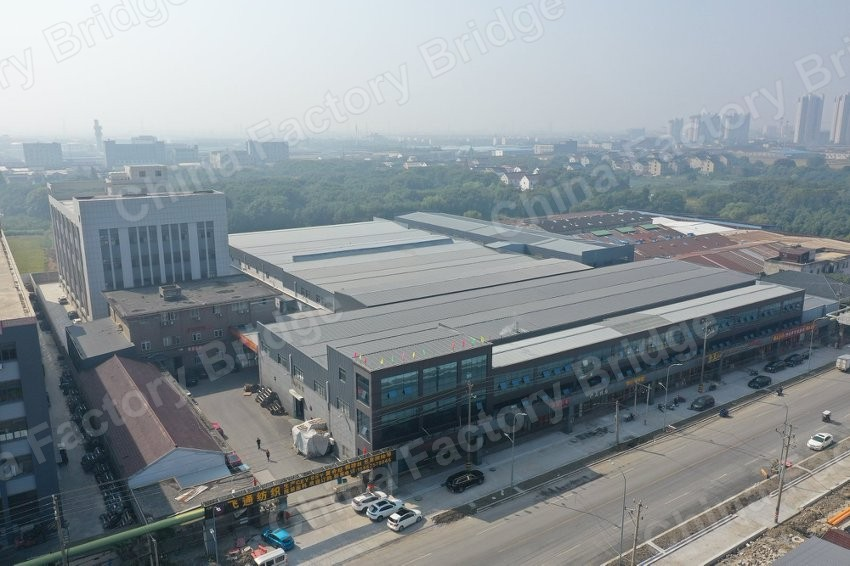
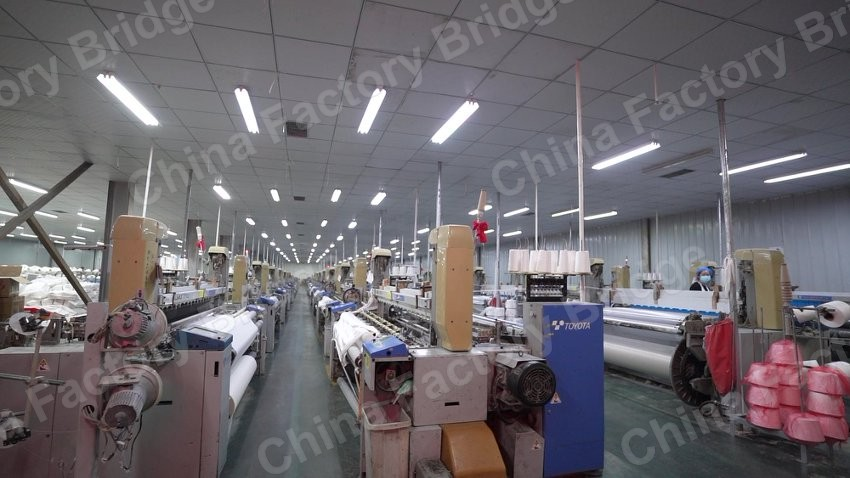
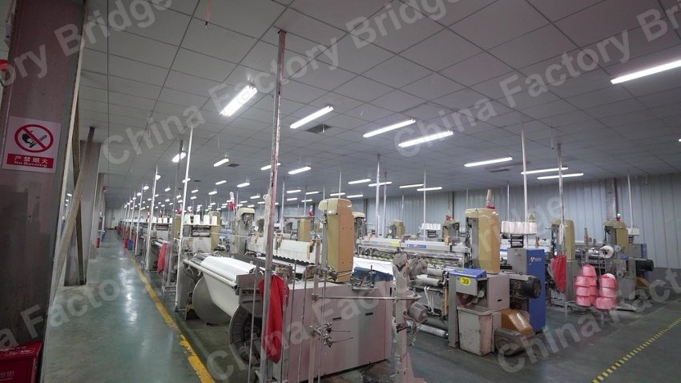
当内部视角有限时，厂区语境和基础设施细节也能帮助说明现场条件。
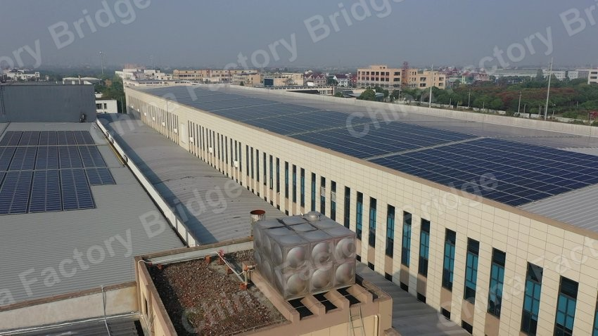

产线级视角可以说明生产设备和作业空间，同时不暴露具体工厂。
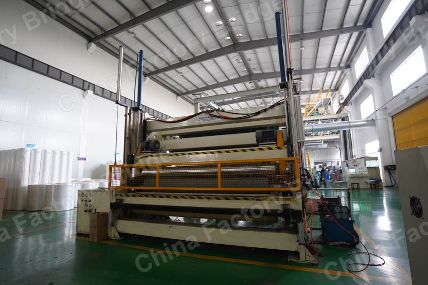

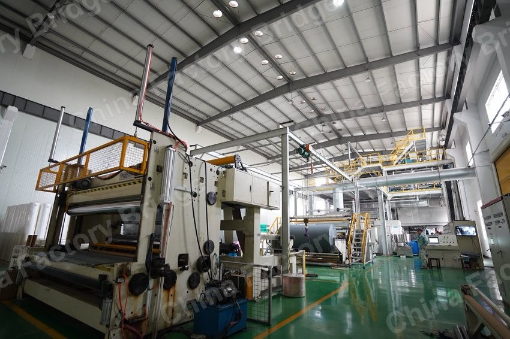
你可以发送产品页、工厂介绍、开发信、宣传册或几张车间照片。格物集会先判断这些资料是否足以让海外采购商理解产品、能力、订单适配和继续沟通的理由。